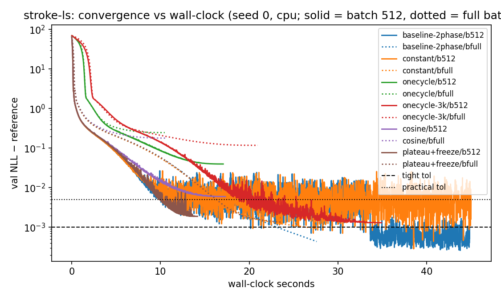
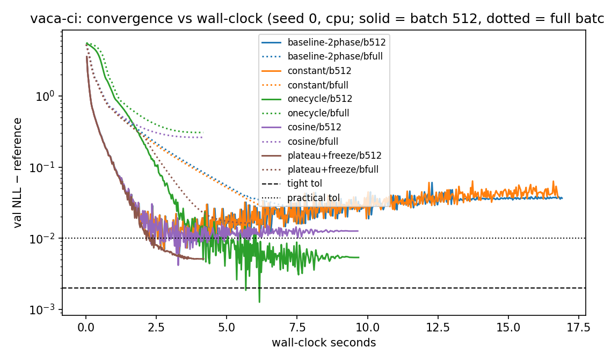

Benchmark of learning-rate schedules, per-node freezing, batch sizes,
devices and LBFGS — June 2026, Apple-silicon Mac mini, torch 2.12 (CPU
unless noted). Reproduce with
cd experiments && uv run python bench_training.py
(grid ≈ 35 min; raw numbers in
results/bench-training/results.csv). For a quick
cross-machine comparison (fixed 200-epoch workloads,
all available devices, machine fingerprint to JSON) use the
self-contained experiments/perf_machine.py — runs on any
box after pip install tramdag.
Schedules (fit(..., schedule=...))
control the learning rate over training:
| value | behavior |
|---|---|
None (default) |
constant lr — the classic behavior, exactly as before this PR |
"plateau" |
per-node: a node whose own validation NLL hasn't
improved by min_delta (default 1e-4) for
plateau_patience epochs (default 15) gets its lr × 0.3,
floored at 1e-3 × the initial lr. Each node decays independently — valid
because the per-node losses have independent gradients. |
"onecycle" |
warmup to learning_rate, then anneal to ~0 over exactly
the epochs budget (torch OneCycleLR) — use
only when you know the right budget |
"cosine" |
cosine decay from learning_rate over
epochs |
Early stopping / freezing
(fit(..., freeze_patience=N)): a node whose validation NLL
hasn't improved for N epochs is frozen — removed
from the loss and backward pass (real compute saving), its weights fixed
from then on. When all nodes are frozen the fit returns early; freeze
epochs are recorded in flow.history["frozen"]. Under
schedule="plateau", freezing additionally waits until the
node's lr has been decayed ≥ 100×, so nodes don't freeze while a smaller
step size would still make progress. Freezing state is
per-fit()-call: a second fit call trains all
nodes again.
Switching it all off — e.g. for an exact comparison
with classical methods (statsmodels, R
polr/tram): simply omit both arguments. The
defaults are unchanged by this PR, so
flow.fit(train_df, epochs=4000, learning_rate=1e-2) # constant lr, no freezing
flow.fit(train_df, epochs=2000, learning_rate=1e-3) # classic two-phase recipeis still the exact-MLE path used by
experiments/validate_ls.py. (Independent of all this,
restore_best=False remains the default — see CHANGELOG.)
The guard test
tests/test_fit_schedules.py::test_plateau_freeze_preserves_exact_mle
additionally shows that even with plateau+freezing the
all-ls fit lands on the classical MLE within the usual
tolerances.
LBFGS is not a fit() option —
it's a classical full-batch optimizer that only makes sense for small,
parametric (all-ls) models. Recipe (also in
experiments/bench_training.py::run_lbfgs):
flow = CausalFlowDAG(build_spec("ls"))
flow._set_ranges(train_df) # transform ranges from train quantiles
vals = flow._tensorize(train_df)
opt = torch.optim.LBFGS(
flow.parameters(),
lr=1.0,
max_iter=40,
history_size=30,
line_search_fn="strong_wolfe",
)
def closure():
opt.zero_grad()
loss = torch.stack([-lp.mean() for lp in flow.node_log_prob(vals).values()]).sum()
loss.backward()
return loss
for _ in range(10):
loss = opt.step(closure) # full-batch quasi-Newton stepsFast (< 2 s to coefficient-level accuracy) but not robust across seeds (see Findings #2) — use it as a quick first shot with the plateau trainer as fallback.
Each config runs once; fit() records per-epoch
validation NLL and wall-clock time, so we read off the seconds
until the fit is within a fixed gap of a cached long-run reference (3
torch seeds, medians):
| workload | model / data | reference NLL | tight tol | practical tol |
|---|---|---|---|---|
| stroke-ls | all-ls stroke DAG, frozen magic-mrclean/ls
(n=1275, full-data MLE) |
10.3042 (train) | +1e-3 | +5e-3 |
| vaca-ci | all-ci flow, frozen vaca (n=5000, 90/10
split) |
4.9632 (val) | +2e-3 | +1e-2 |
Tight ≈ exact-MLE equivalence (statsmodels/R-polr match).
Practical ≈ coefficient-equivalent: a stroke fit with gap ≈
3e-3 already matches the R reference coefficients within the test
tolerances
(tests/test_fit_schedules.py::test_plateau_freeze_preserves_exact_mle).


Median seconds to target (batch 512, cpu; "—" = never reached within budget):
| config | stroke-ls practical | stroke-ls tight | vaca-ci practical | vaca-ci tight | self-stops |
|---|---|---|---|---|---|
| baseline two-phase (old default) | 9.0 | 21.4 | 2.1 | 2.8¹ | no (runs 40 s / 15 s) |
| constant 1e-2 | 9.1 | 21.5² | 2.2 | 2.8¹ | no |
| onecycle (1500 / 300 ep) | — | — | 3.5 | 4.5 | no |
| onecycle (3000 ep) | 16.8 | — (gap 1–2e-3) | no | ||
| cosine | — | — | 2.2 | 3.5¹ | no |
| plateau + freeze | 8.9 | — (gap 2e-3) | 2.0 | 2.9 | yes — 13 s / 4 s total |
| LBFGS (full-batch) | 1.6 (2/3 seeds) | — (gap 4–8e-3) | n/a | n/a | yes |
¹ transient: the val-NLL curve dips through the target and then drifts away (stroke: needs the 1e-3 phase to stay; vaca: mild overfitting). Final gap for the vaca baseline is 0.037 — the old 520-epoch budget underfits vaca by ~0.03 nats. Plateau+freeze stays at its target. ² constant lr at batch 512 stalls at gap 3–7e-3; only the lr-decay phase closes the last decade (that's exactly why the two-phase recipe existed).
ls model in < 2 s (vs 9 s for Adam)
on 2/3 seeds; the third stalls at gap 8e-3. An Adam warm start made it
worse (different basin), every seed. Use it as a fast first
shot with the plateau trainer as fallback, not as the default.For everyday fits:
flow.fit(
train,
val,
epochs=4000,
learning_rate=1e-2,
batch_size=512,
schedule="plateau",
plateau_patience=30,
freeze_patience=120,
)(generous epochs as a ceiling — the fit stops itself).
For exact classical comparisons where the last 1e-3 matters, append a
short constant-lr polish phase
(epochs=500, learning_rate=1e-3) after the plateau fit, or
run the old two-phase recipe.
We deliberately did not change
fit()/run_experiment defaults in this PR
(default changes are their own reviewed decision — see the
restore_best episode in CHANGELOG.md). If this report
convinces us, flipping
experiments/common.py::run_experiment to the plateau recipe
is a 3-line follow-up.